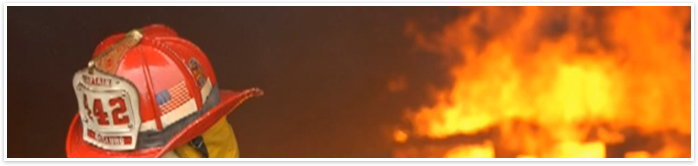

24/7 Emergency Services

Emergency Disaster Response
When fire strikes, it is critical that you and your contractor act rapidly and efficiently to protect your property, valuables and minimize the impacts. JH Construction will be there to:
- Board-Up the premises to make the property safe and secure. Board up will protect the property from intruders as well as protect the premises from the outside elements.
- Remove affected building materials and discard/clean contents (with your approval)
- Mitigate water damage through water extraction, drying and dehumidification and use of disinfection products to stop the growth of bacteria, fungi, mildew, and other harmful microorganisms.
- Work with a team to thoroughly clean all affected home contents and remove soot and odors from the premises.
- Contact your Insurance Company from the onset to immediately find you and your family a suitable local residence to restore order to your life, restore your children’s school schedule and get you back on your feet.
- Work with your Insurance Company to provide you with cash advancement so you can purchase food, clothing, and critical items so you and your family can function – those first few days can be the most stressful. Often JH Construction can also provide you with a cash advancement if the Insurance Company is slow to act.
Emergency disaster response and restoration services
24 hours a day, seven days a week